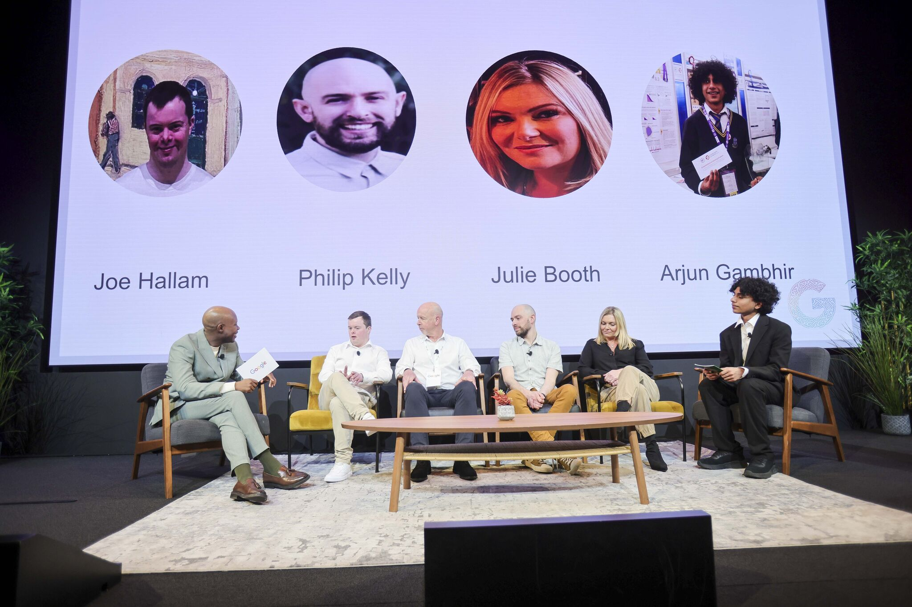
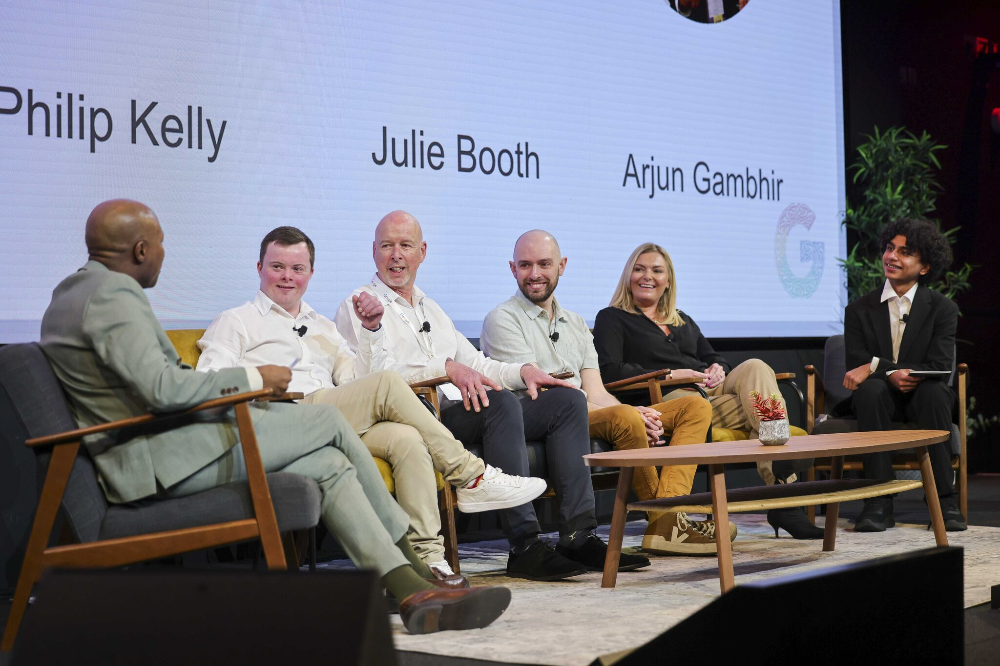

Ideas that travel further when they are spoken clearly.
Advocacy & Speaking
A growing collection of talks, podcasts, panels, and media moments around
young people, technology, AI, digital safety, climate, and community.
01
Featured Speaking Stages


Google FoundryCommunity AI
2026 . Google x Common Purpose
Google AI in Community
I was invited to Google Ireland’s AI in the Community event as a panelist for over 200 community leaders in Google foundry. I presented my book on data centres and introduced SEEK: Start Small, Experiment, Enquire and Know More when exploring AI. That idea later became the S.E.E.K AI app.
At Common Purpose Ireland’s Legacy25 event in Google’s Foundry, I spoke to 150 undergraduate students about trust in the AI era, mentored emerging changemakers and shared why technology must be transparent, predictable and accountable.
Google Safety Engineering CenterNeuro-AI research findings
2026 . Google Safety Labs
Growing Up in the Digital Age
I was honoured to speak as a young AI expert at the Google Safety Engineering Center in Google’s European headquarters, presenting my research on the neurocognitive impact of generative AI content compared with human-created content and sharing insights on protecting critical thinking in the AI era.
At 16, I represented Dublin Tech Circuit as an event partner at the Learnovate Summit 2025 in the Aviva Stadium, connecting with Ireland’s leading educators and innovators from AWS, Vodafone, Microsoft, Workday and Trinity College Dublin—all while keeping my tie straight and enjoying a very unusual school Thursday.
At Dublin Maker 2025, Ireland’s largest maker festival with over 10,000 attendees, I showcased APTOS—my adaptive traffic-optimisation system—and demonstrated how it could improve Ireland’s current traffic infrastructure, nearly losing my voice after two days of conversations with families, policymakers and fellow innovators.
As an ECO-UNESCO youth climate advocate, I joined RTÉ’s Ecolution panel to discuss rising sea levels, their causes and impact, and how young people can help drive meaningful climate action.
A reflective conversation with Dr. Niamh Shaw on curiosity, direction, and staying grounded while chasing ambitious ideas. The episode explores how young builders can keep their sense of purpose while navigating science, creativity, uncertainty, and community work.
Selected as the youngest participant in an elite seven-week accelerator supported by Stripe, OpenAI, Abbey Capital and Dogpatch Labs, I researched swarm robotics, built virtual simulations and a physical five-robot system, and presented the project to over 300 founders, researchers and industry professionals at Demo Day.
Promoted to the Youth Committee as one of the top 13 participants from 100 Youth Ambassadors, previously selected from 1,100+ applicants. Delivered sessions on leadership, communication, the Sustainable Development Goals and other topics, while mentoring ambassadors, sharing opportunities and facilitating student-led discussions.
Selected as one of 35 Fellows from 3,500 applicants, I conducted original research on generative AI, cognition and cognitive load with mentorship from The Alan Turing Institute, before presenting my findings at the fellowship’s Demo Day.
Reviewed 1,800+ applications from students across 45+ countries and helped select 120 participants for a seven-week research and academic writing programme. Delivered weekly sessions on neuroscience and scientific methods, guided MLA-formatted research papers and provided structured feedback for a collaborative neuroscience journal.
Selected for Trinity College Dublin’s Waltons Club Innovators programme, I studied university-level subjects including AI, calculus, computer science and physics, while developing research on detecting deepfakes through image analysis without using an AI model.